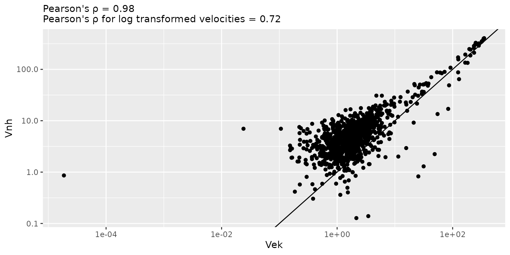
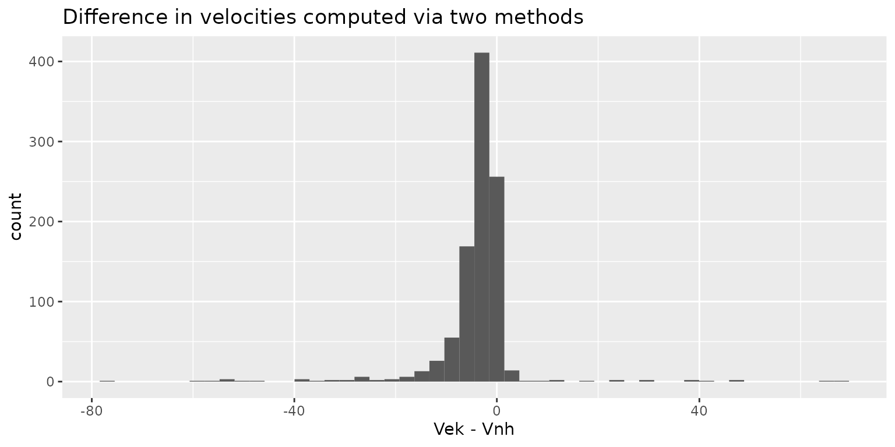

velocity_computation.RmdBecause the gaze samples tend to be noisy, different methods use
various approaches for computing velocity from noisy samples. Methods by
Engbert and Kliegl (2003) and Otero-Millan et al. (2014) used the same
approach based on averaging over multiple samples to compute velocity,
whereas Nyström and Holmqvist (2010)
compute a simple derivative and then filter it. By default, package uses
the former approach (velocity_function = diff_ek) but you
can also use the latter (velocity_function = diff_nh) or
implement a custom method (see below). Acceleration is computed the same
way but from velocity samples.
This method computes velocity over a predefined time window
controlled via ek_velocity_time_window that defaults to 20
ms. The width of the window is converted to samples based on the
sampling_rate parameter and is ensured to be an
odd number equal to or larger than 3. I.e., for a window that
is three samples long, the velocity is computed based on one sample
before and one sample after the current, for a five-samples window - two
samples before and after, etc. The code always starts with the requested
window size but all iteratively reduces it by two samples to accommodate
for trial limits and missing values. An NA velocity is
returned only if even the smallest window (three samples wide) cannot be
used.
In general, horizontal and vertical velocity components are computed as \[v_x[i] = \frac{\sum_{j=1}^{(N-1)/2}x[i+j] - x[i-j]}{\sum_{j=1}^{(N-1)/2}2j\cdot\Delta t}\] where \(i\) is the index of a sample, \(\Delta t = \frac{1}{sample~rate}\) is a duration of a single sampling frame, and \(N\) is an odd integer width of the moving average used to compute the velocity. In Engbert and Kliegl (2003), \(N=5\) and \(\Delta t = 4\) (250 Hz sampling rate) that translates into a 20 ms moving average window (default value used in the method implementation). Below is a derivation that shows the equivalence of the formula above to formula 1 in Engbert and Kliegl (2003). For \(N=5\): \[\frac{\sum_{j=1}^{(5-1)/2}x[i+j] - x[i-j]}{\sum_{j=1}^{(5-1)/2}2j\cdot\Delta t}=\] \[\frac{\sum_{j=1}^{2}x[i+j] - x[i-j]}{\sum_{j=1}^{2}2j\cdot\Delta t}=\]
\[\frac{x[i+1] - x[i-1]+x[i+2] - x[i-2]}{2\Delta t + 4\Delta t}=\] \[\frac{x[i+2] + x[i+1] - x[i-1] - x[i-2]}{6\Delta t}\]
Horizontal and vertical components of velocity are computed from
adjacent samples, the amplitude is computed from the components and then
is filtered using Savitzky-Golay
filter. Filter order is controlled via
nh_sg_filter_order option and defaults to
2.
The two methods produce comparable but different velocity values. However, this has only a minor effect on saccade detection, see vignette on Using sample votes.
# computing velocity using two methods
vel_ek <- saccadr::diff_ek(x = single_trial$x,
y = single_trial$y,
trial = rep(1, nrow(single_trial)),
sample_rate = 500)
vel_nh <- saccadr::diff_nh(x = single_trial$x,
y = single_trial$y,
trial = rep(1, nrow(single_trial)),
sample_rate = 500)
vel_comparison <- na.omit(data.frame(EK = vel_ek[['amp']], NH = vel_nh[['amp']])) %>%
dplyr::filter(NH > 0) %>% # values can be negative due to filtering
dplyr::mutate(logEK = log(EK), logNH = log(NH))
# plotting amplitude comparison
pearson_rho <- cor(vel_comparison[['EK']], vel_comparison[['NH']])
ggplot(data = vel_comparison, aes(x = EK, y = NH)) +
geom_abline() +
geom_point() +
scale_x_log10() +
scale_y_log10() +
labs(subtitle = sprintf("Pearson's ρ = %.2f\nPearson's ρ for log transformed velocities = %.2f", pearson_rho, cor(vel_comparison[['logEK']], vel_comparison[['logNH']])),
x = "Vek",
y = "Vnh")
# plotting
ggplot(data = NULL, aes(x = vel_comparison[['EK']] - vel_comparison[['NH']])) +
geom_histogram(bins = 50) +
xlab("Vek - Vnh") +
labs(title = "Difference in velocities computed via two methods")
A custom function should be as a follows
diff_custom <- function(x, y, trial, sample_rate, options=NULL) {
# compute vertical and horizontal components
df <- data.frame(x = ..., # differentiate values of x
y = ...) # differentiate values of y
# compute amplitude
df[['amp']] = sqrt(df[['x']]^2 + df[['y']]^2))
# return a data.frame with columns x, y, and amp
return(df)
}Arguments that are passed to the function (all vectors have the same length):
x, y vectors with values, either x and y
gaze coordinates or velocity components (for acceleration).sample_rate scalar value in Hz.trial vector with trial index per sample.options a named list with method specific options. See
example below for how to use them. See also
option_or_default() function.The function must return a data.frame with three columns:
x (horizontal component), y (vertical
component), and amp (amplitude).
Here is an example of a simple velocity function that respects trial borders
library(dplyr)
diff_custom <- function(x, y, trial, sample_rate, options=NULL) {
# computing frame time step
delta_t_s <- 1 / sample_rate
# --- differentiate (compute velocity or acceleration) and filter
data.frame(trial = trial,
x = x,
y = y) %>%
# compute velocity and acceleration for each trial
group_by(trial) %>%
mutate(x = (x - lag(x)) / delta_t_s,
y = (y - lag(y)) / delta_t_s,
amp = sqrt(x^2 + y^2))
}And here is a similar function but that uses an optional
custom_velocity_lag parameter, so that it can be different
from 1
diff_lag_n <- function(x, y, trial, sample_rate, options=NULL) {
# obtain lag or use default
lag_n <- saccadr::option_or_default(options, "custom_velocity_lag", 1)
# computing frame time step
delta_t_s <- 1 / sample_rate
# --- differentiate (compute velocity or acceleration) and filter
data.frame(trial = trial,
x = x,
y = y) %>%
# compute velocity and acceleration for each trial
group_by(trial) %>%
mutate(x = (x - lag(x, lag_n)) / delta_t_s,
y = (y - lag(y, lag_n)) / delta_t_s,
amp = sqrt(x^2 + y^2))
}